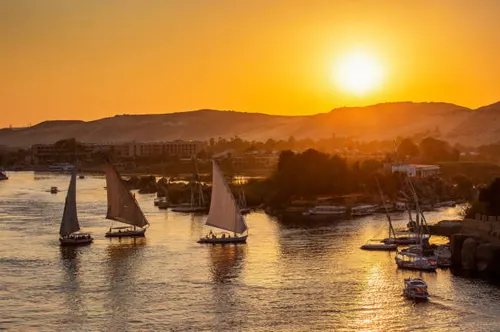
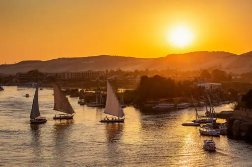
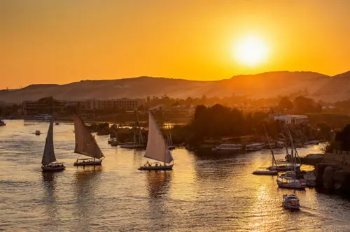
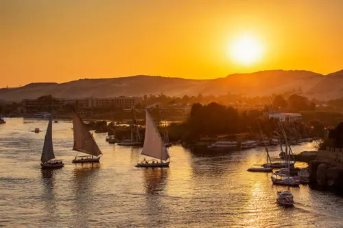

Le Nil, fleuve mythique qui a vu naître la civilisation égyptienne, offre aujourd'hui des croisières inoubliables entre Louxor et Assouan. Ces voyages permettent de découvrir les trésors de l'Égypte ancienne tout en profitant du paysage changeant des rives du fleuve.
Les croisières modernes se font à bord de navires luxueux équipés de tous les conforts, tandis que les traditionnelles felouques (voiliers égyptiens) proposent une expérience plus authentique. Le parcours passe par des sites archéologiques majeurs comme les temples de Karnak, Louxor, Edfou et Kom Ombo.
Naviguer sur le Nil, c'est suivre les traces des pharaons et des explorateurs qui, depuis des millénaires, ont fait de ce fleuve l'artère vitale de l'Égypte.
Le Nil est depuis l'antiquité la principale voie de communication de l'Égypte. Les pharaons organisaient déjà des processions fluviales pour relier Thèbes (Louxor) à Abou Simbel.
Les croisières touristiques modernes ont commencé au XIXe siècle, avec l'ouverture de l'Égypte aux voyageurs européens. Agatha Christie a popularisé ces croisières avec son roman "Mort sur le Nil".
Aujourd'hui, plus de 300 bateaux de croisière naviguent sur le Nil entre Louxor et Assouan, faisant de cette région l'une des destinations de croisière fluviale les plus prisées au monde.